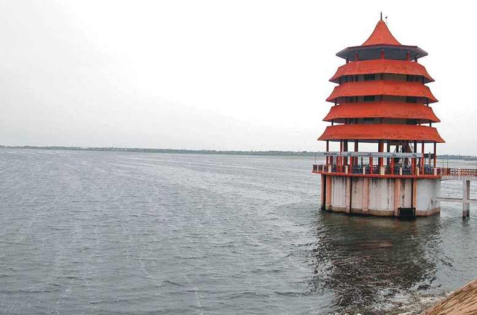

Chennai is located at 13.04°N 80.17°E on the southeast coast of India and in the northeast corner of Tamil Nadu. It is located on a flat coastal plain known as the Eastern Coastal Plains. The city has an average elevation of 6 metres (20 ft), its highest point being 60 m (200 ft).
The geology of Chennai comprises mostly clay, shale and sandstone. The city is classified into three regions based on geology, sandy areas, clayey areas and hard-rock areas. Sandy areas are found along the river banks and the coasts. Clayey regions cover most of the city. Hard rock areas are Guindy, Velachery, Adambakkam and a part of Saidapet.
In sandy areas such as Tiruvanmiyur, Adyar, Kottivakkam, Santhome, George Town, Tondiarpet and the rest of coastal Chennai, rainwater run-off percolates very quickly. In clayey and hard rock areas, rainwater percolates slowly, but it is held by the soil for a longer time. The city's clayey areas include T. Nagar, West Mambalam, Anna Nagar, Perambur and Virugambakkam.
Climate
Chennai features a tropical wet and dry climate. Chennai lies on the thermal equator and is also coastal, which prevents extreme variation in seasonal temperature. For most of the year, the weather is hot and humid. The hottest part of the year is late May and early June, known locally as Agni Nakshatram ("fiery star") or as Kathiri Veyyil, with maximum temperatures around 38–42 °C (100–108 °F). The coolest part of the year is January, with minimum temperatures around 18–20 °C (64–68 °F).
The lowest temperature recorded is −3 °C (27 °F) and highest 45 °C (113 °F)(30 May 2003)
The average annual rainfall is about 1,400 mm (55 in). The city gets most of its seasonal rainfall from the north-east monsoon winds, from mid-September to mid-December. Cyclones in the Bay of Bengal sometimes hit the city. Highest annual rainfall recorded is 2,570 mm in 2005. The most prevailing winds in Chennai is the Southwesterly between the end of May to end of September and the Northeasterly during the rest of the year.
Water Bodies
Two rivers meander through Chennai, the Cooum River (or Koovam) in the central region and the Adyar River in the southern region. Both rivers are heavily polluted with effluents and trash from domestic and commercial sources. The Adyar, which is much less polluted than the Cooum, is de-silted and cleaned periodically by the state government. A protected estuary of the Adyar forms the natural habitat of several species of birds and animals. The Buckingham Canal, 4 km (2.5 mi) inland, travels parallel to the coast, linking the two rivers. The Otteri Nullah, an east-west stream runs through north Chennai and meets the Buckingham Canal at Basin Bridge. Several lakes of varying size are located on the western fringes of the city. Red Hills, Sholavaram and Chembarambakkam Lake supply Chennai with potable water. Groundwater sources are mostly brackish.
x
Historically, Chennai has faced a problem of water supply shortages as no big river flows through it with a resulting over-reliance on annual monsoon rains to replenish water reservoirs. The city's ground water levels have been depleted to very low levels in many areas. Many residents buy their drinking water. An earlier Veeranam project was unsuccessful in solving the city's water supply shortages, but the New Veeranam project which became operational in September 2004 has greatly reduced dependency on distant sources. In recent years however, due to heavy and consistent monsoon rains and the implementation of rainwater harvesting (RWH) techniques by Chennai Metrowater at their Anna Nagar Rain Centre, water shortages have been reduced significantly, and this has led Chennai to be a model of RWH technology for other cities. Moreover, newer projects like the Telugu Ganga canal project that brings water from water-surplus rivers like the Krishna river in Andhra Pradesh have eased water supply shortages. The city is also constructing sea water desalination plants to further ease water supply shortages.
Layout
For administrative purposes Chennai is divided into five talukas; namely Egmore-Nungambakam, Fort Tondiarpet, Mambalam-Guindy, Mylapore-Triplicane and Perambur-Purasawalkkam. The city is divided on the basis of composition into four major parts: North, Central, South and West.
The Chennai Metropolitan area consists of three districts namely Chennai city and the districts of Kanchipuram and Thiruvallur. The city area covers an area of 476 km2 (184 sq mi). The metropolitan area covers 1,177 km2 (455 mi²).
North Chennai is primarily an industrial area. Central Chennai is the commercial heart of the city and the downtown area. South Chennai and West Chennai, previously predominantly residential areas are fast turning into commercial areas, hosting a large number of IT and financial companies. The city is fast expanding along the Old Mahabalipuram Road, GST Road, Sriperumbdur, Koyambedu and Ambattur. The Chennai Metropolitan Development Authority has drafted a Second Master Plan for Chennai, that aims to develop a satellite townships around the city. Contiguous satellite towns include Mahabalipuram to the south, Chengalpattu and Maraimalai Nagar to the south west, Kanchipuram town, Sriperumpudur, Tiruvallur and Arakkonam to the west.